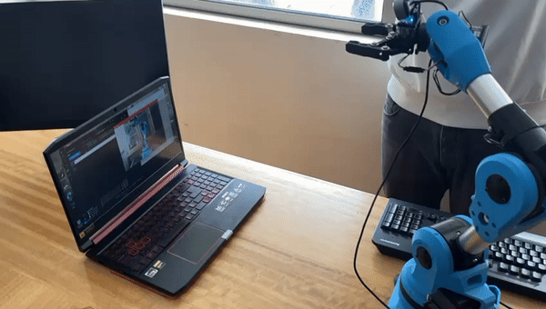

|
Cristian Basoalto I am a researcher focused on robotics, AI, and advanced control systems. As a professor at the University of Bío-Bío, I teach courses in robotics and control while leading projects in renewable energy and autonomous systems. I hold a Master's in Mechanical Engineering from the University of Concepción, where I specialized in Model Predictive Control. My work integrates mechatronics, AI, and ROS2 to solve real-world challenges in dynamic environments. Email / CV / Github / Google Scholar |
{kind=link}
Research ProjectsHere are some of my most notable research projects in robotics, control systems, and artificial intelligence. |

|
Model Predictive Control Applied to an Autonomous Indoor Blimp
Cristian Basoalto C. Master's Thesis, University of Concepción, 2023-2. This thesis focuses on the implementation of Model Predictive Control (MPC) for the autonomous navigation of an indoor blimp. The study includes system modeling, simulation, and real-world testing. Technologies: Model Predictive Control, MATLAB/Simulink, Control Systems |
|
 |
Convolutional Neural Network Programming, Camera Calibration, and Inverse Kinematics for Harvesting Ripe Apples
Jorge Céspedes (supervised by Cristian Basoalto) Professional Qualification Project, 2024-1 This project involves programming a convolutional neural network for fruit recognition, calibrating a camera for precise localization, and computing inverse kinematics for robotic apple harvesting. Technologies: CNN, Computer Vision, Inverse Kinematics, Python, OpenCV |

|
LQR Control Applied to an Inverted Pendulum
Nicolás Cid, Danilo Pastrana (supervised by Cristian Basoalto) Advanced Control Systems Elective (440414), 2024-2. This project involves modeling, simulating, and controlling an inverted pendulum using Linear Quadratic Regulator (LQR). The controller was implemented and tested on the real system. Technologies: LQR Control, MATLAB/Simulink, Control Theory, Real-time Systems |
Technical Skills & Expertise
|
ContactIf you're interested in collaboration, research opportunities, or have questions about my work, please don't hesitate to reach out. |
|
Template based on the source code of Jon Barron. |